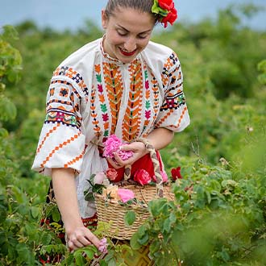

Всяка година през последната събота на май в Карлово се провежда
атрактивният
Празник на розата, който събира десетки гости от
страната и чужбина.
Фестивалът започва с ритуала розобер в розовите градини край града, където младежи и девойки в народни носии демонстрират беритбата на розовите цветове.
Гостите се посрещат с обредни хлябове и китка от рози и здравец. Кукерските танци и шествието с Царицата на розата внасят всеобщо оживление.
По фестивалната Алея на розата се представят местни занаяти и производства, свързани с розите. Фестивалът приключва с празнична програма.
Това е един от най-известните празници в община Карлово, посветен на красотата и цветята, пролетта и благоуханието на безценната карловска роза.